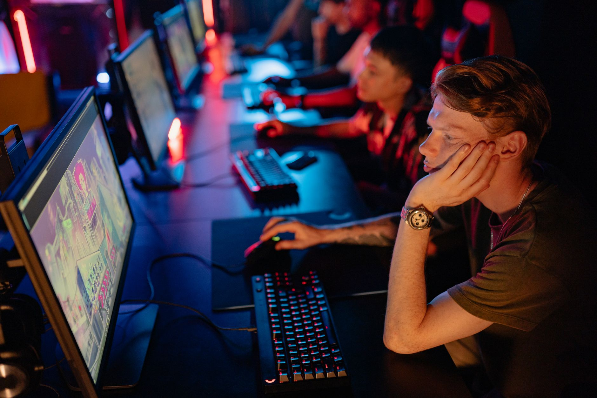

The rising threat of player burnout
In the high-stakes world of professional esports, the pressure to perform is constant. Players are expected to practice for twelve to fourteen hours a day, participate in endless online qualifiers, and travel across the globe for international tournaments. While this dedication often leads to success, it also creates a breeding ground for severe mental fatigue and burnout.
Burnout in esports is not just about feeling tired after a long day of gaming. It is a deep-seated exhaustion that can affect a player's reaction times, decision-making abilities, and overall passion for the game. When a player reaches this state, their performance often plummets, which can have devastating consequences for their team's ranking and sponsorship deals.
The industry has historically struggled to address this issue, often viewing long hours as a necessary sacrifice for greatness. However, as the careers of top-tier pros become more scrutinized, the conversation around sustainable playing habits is finally beginning to take center stage in the community.
Sidde speaks out on tournament preparation
In a recent interview regarding upcoming competitive schedules, professional player sidde highlighted a critical flaw in how teams approach major tournaments. He expressed concerns that the current pace of play might leave players too exhausted to perform at their peak when it matters most.
We need to find a good balance to not get to the Major feeling 100% burned out.
Sidde's comments resonate with many in the scene who feel that the push toward the next big event often ignores the human element of the competition. If a player arrives at a Major tournament—the pinnacle of their career—already feeling depleted, the technical skill they possess may not be enough to secure a victory.
Finding the balance between practice and rest
To avoid the burnout sidde describes, teams must rethink their training methodologies. It is no longer enough to simply play more hours; players must also focus on the quality of those hours. This involves integrating structured breaks, physical exercise, and proper sleep hygiene into their daily routines.
Effective training schedules should include several key components to ensure longevity:
The impact on team performance and stability
When individual players suffer from burnout, the entire team dynamic suffers. Communication becomes strained, frustration levels rise, and the cohesive unit required to win at the highest level begins to fracture. This often leads to roster instability, as teams are forced to make sudden changes to replace exhausted or unmotivated players.
Organizations are beginning to realize that investing in player wellness is actually a strategic move for long-term success. A stable roster that remains healthy throughout the year is far more valuable than a roster of superstars who flame out after a single season of intense competition.
This shift in perspective is helping to create a more professionalized environment where player longevity is prioritized alongside tournament winnings.
Learning and growth in the elite tier
Maintaining a high level of play requires more than just physical stamina; it requires a constant commitment to intellectual and skill-based growth. Players must balance the need for rest with the need to stay sharp and evolve alongside the evolving meta of their respective games.
This delicate dance between resting the mind and pushing the limits of one's ability is what separates the good from the great. Much like how Kyxsan Discusses Growth and Learning in Elite Esports, players must view every setback and every period of rest as an opportunity to build a more resilient foundation for their future careers.
By viewing mental health and continuous learning as two sides of the same coin, the next generation of esports professionals can enjoy longer, more successful careers without the looming threat of total exhaustion.
See Also
If you enjoyed this Esports News article, check out Kyxsan Discusses Growth and Learning in Elite Esports for more useful reading.